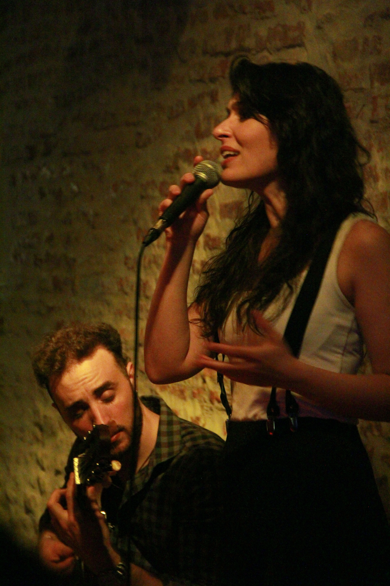
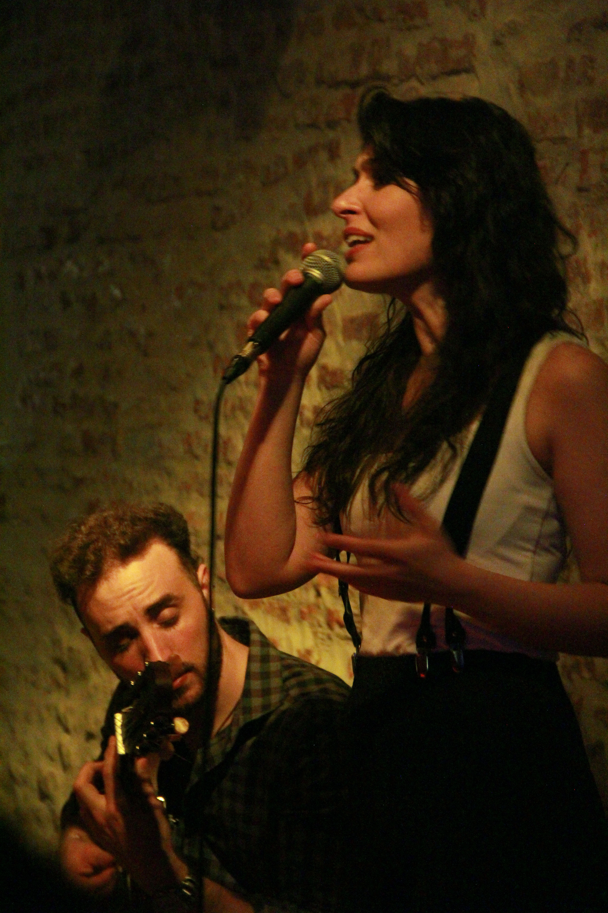
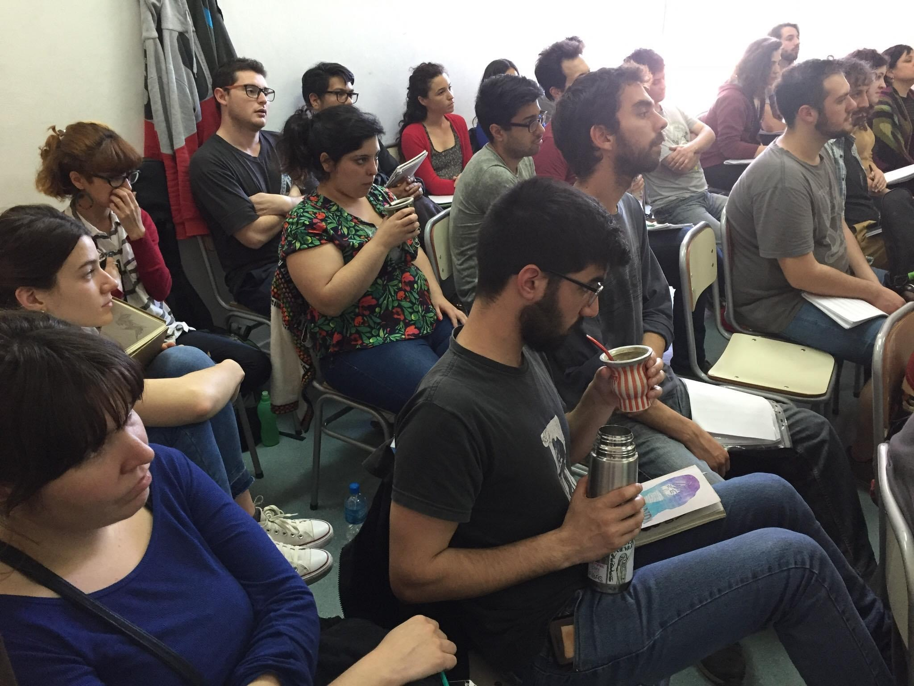
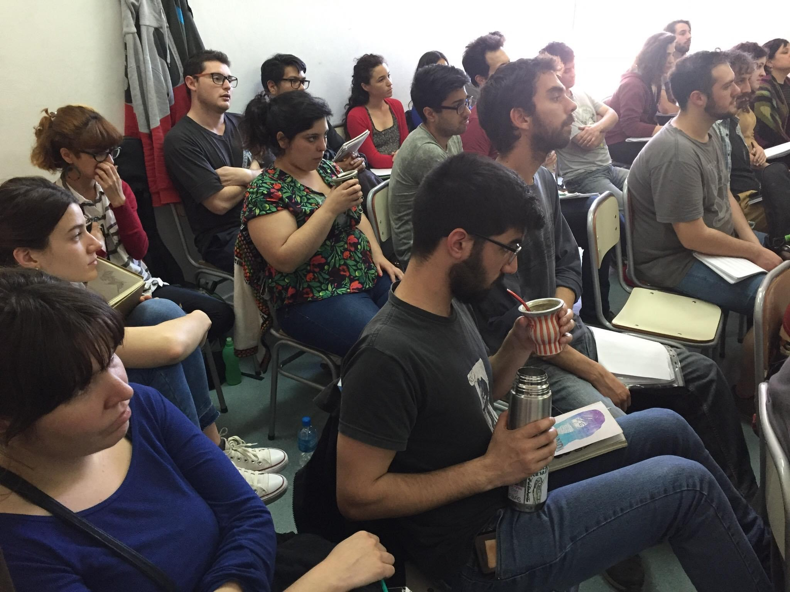
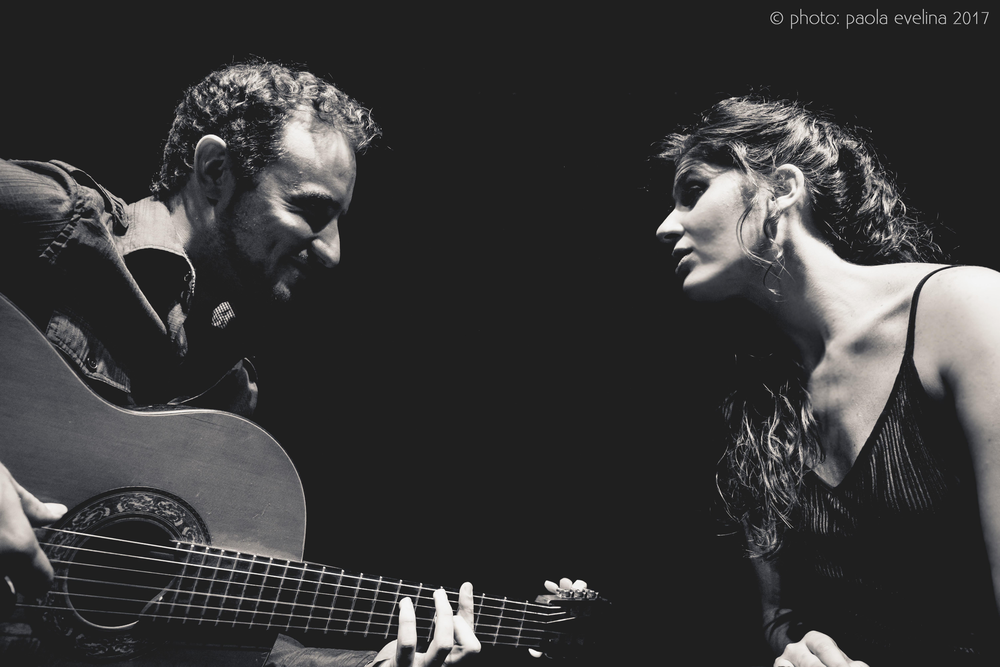
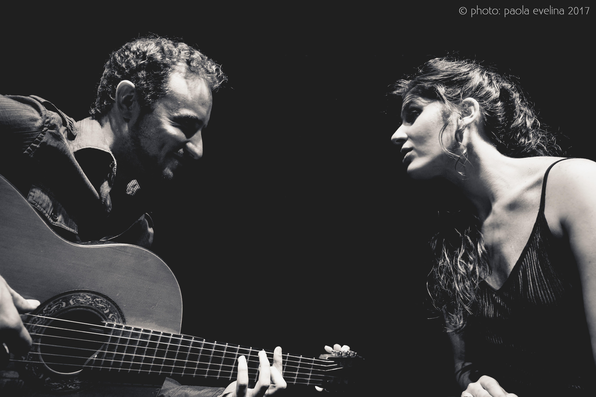

CLASES Y CURSOS
PRESENCIALES Y
ONLINE
Entrá a cada una de las siguientes secciones y enterate cómo son las
clases
DISCOGRAFIA

HOY (2022)
Es el primer disco que abarca temas de compositoras y autoras contemporáneas de Tango, creado y orquestado para ser bailado de principio a fin. La idea original es de Natalia Bril, los arreglos, el piano y la dirección fueron realizados por la pianista y compositora Noelia Sinkunas. Comprende tangos, valses y milongas de Natalia Lagos, Elbi Olalla, Noelia Sinkunas, Ana Sofia Stamponi, Delfina Daverio y Cintia Trigo. Además posee un bonus track al final del disco, de un tango del Siglo pasado compuesto por Maruja Pacheco Huergo con letra de Homero Manzi, “Canto de ausencia”. Dijo Víctor Hugo Morales: “Impresionante este disco de Natalia Bril”.
Escuchar nota completa
OTRA MIRADA (2018)
Voz: Natalia BrilGuitarra y arreglos: Leonardo Andersen
En este primer disco, Natalia Bril y Leonardo Andersen abordan clásicos imperdibles del género, para reversionarlos al formato íntimo de guitarra y voz, característico de esta dupla. Dijo Carlos Salatino de Tiempo Argentino: “La química musical que se da entre ambos logra un trabajo en el que el género encuentra una nueva y refrescante mirada”.
Ver nota completaPARTICIPACIONES
ESCUADRON DE GLITTER (2022)
Musica: Noelia SinkunasLetra: Claudia Levy y Natalia Bril
El tema forma parte del disco “Veni que te cuento” gestado por la productora Tango de Hoy. El álbum reúne temas creados especialmente, con la consigna de contarles a Tita Merello y Ada Falcón los cambios que se fueron logrando desde la sociedad que ellas conocieron hasta el día de hoy. Todos los temas fueron compuestos por las cantantes y sus equipos. Formaron parte también: Floru Ubertalli, Estefanía Melonio, Megan Yvonne, Natalia Mancini, Dani Lesté, Eli Fernandez, Sofía Tosello y Natalia Martinez. La grabación de Escuadrón de glitter la realizaron Noelia Sinkunas en el piano, Milagros Caliva en bandoneón y Natalia Bril, voz.

CUCHI CUCHI (2018)
Género: Rock.Coros e improvisación vocal en el tema Cuchi Cuchi del EP “Vivo” de Nico Pérez.

EL RITUAL (2021)
Género: Tango.Choirs on the song El ritual from the album of the same name by Delfina Daverio
PRENSA


BIO
Natalia Bril nació en Buenos Aires. Es cantante de tango desde los inicios de su carrera. Cursó sus estudios en la Escuela de Música Popular de Avellaneda finalizando en 2017 las carreras de cantante y profesora. Estudió con maestros como Alejandro Guyot, Patricia Andrade, Maria Rosa Farré, Mercedes García Blesa, Fabiana Grosso, Claudio Brocco, Maria del Carmen Aguilar, entre otros.
Se ha presentado en diversos escenarios de la ciudad de Buenos Aires como el Festival de Tango de Buenos Aires, Festival de Tango Queer, Café Vinilo, Torquato Tasso, Teatro Roma de Avellaneda (junto a la orquesta de ese municipio), entre otros.
Su primera gira a lo largo de Europa (2019) fue junto al sexteto de tango “La Hoguera” dirigida por el Mtro. Julián Corach actuando en países como Francia, Alemania, Suiza, Austria, República Checa, Dinamarca. Luego en 2020, retornaría a ese continente junto al guitarrista Leonardo Andersen con quien integra un dúo desde 2016 hasta la actualidad.
En 2022 lanzó su segundo disco “HOY” cuya idea original reúne tangos valses y milongas escritos por compositoras mujeres y disidencias del siglo XXI, arreglado y orquestado para quinteto al estilo de las orquestas más emblemáticas de la época de oro del tango. Esta idea original lo ubicó como el primer disco de estas características y se encontró entre los proyectos elegidos por el programa Mecenazgo 2021.
Su primer disco “Otra mirada” fue lanzado en mayo de 2018, compuesto por tangos clásicos versionados a dúo junto a su compañero Leonardo Andersen en guitarra y arreglos. El dúo estuvo entre los elegidos del concurso Bares Notables en 2018.

 


 


 
